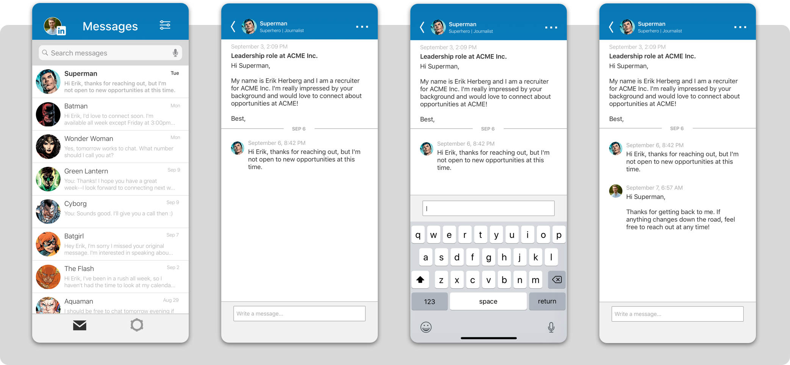
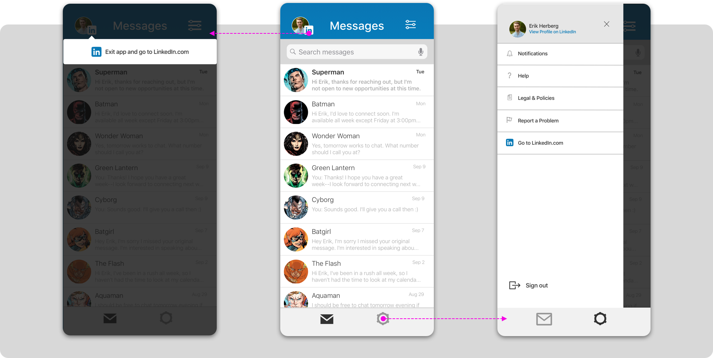

LinkedIn is the largest professional networking platform in the world. LinkedIn Recruiter is a subscription-based product that Linkedin offers to give recruiters to ability to source from within LinkedIn's talent network.
For this project, I conducted a brief study with recruiters who use LinkedIn Recruiter's iOS app to see what they liked, disliked, and wished the app could do. What I discovered was that LinkedIn's Recruiter app was far more robust than it needed to be, which inspired me to design a lighter version of the app, focusing on the core needs of its users: Recruiters.
I found that the primary use for the app was messaging candidates. In LinkedIn Recruiter, your messages go through a separate channel than standard LinkedIn, so message threads with candidates are only visible on your Recruiter account. To make this project short and sweet, I scrapped all other aspects of Recruiter iOS, and focused solely on its messaging experience.
The screen-caps below capture your current messaging experience on Recruiter iOS. Users found that Recruiter iOS bears no resemblance to LinkedIn’s iOS app, which made it feel disassociated from LinkedIn. Upon further observation, I found that Recruiter iOS doesn't have message threads, and every message comes through individually, giving the appearance of multiple conversations with the same person. Additionally, you're unable to see your sent messages when communicating with candidates, which may affect the flow of a conversation.
Most of my design decisions were driven by LinkedIn’s iOS app. I focused on brightening the application, leveraging LinkedIn’s current patterns. I also incorporated the thread-based messaging experience, so no more one-off messages.
Outside of the messaging experience, I updated the ‚ÄòSettings‚Äô experience. Rather than a separate settings page, a slide-out menu appears for a more contemporary design feel. This application also introduces a ‚ÄòNotifications‚Äô setting since the original app doesn‚Äôt notify you if you receive messages, helping you respond to your candidates ASAP. üòÅ
For a better view of InMail Recruiter's workflow, click on the image below!
{kind=link}